Ролик 1 мин 53 с с голосом. Путь клиента: регистрация, адрес сайта и регион, анализ, а дальше тур по каждому разделу кабинета с объяснением, зачем он нужен. Оформление берём от первой версии, лучшие приёмы второй версии и референсов вплетаем. Ниже по каждому кадру: что на экране, как движется, какой текст в кадре и что говорит голос.
Тёмная «сцена» бренда: чёрный, синее свечение снизу, тонкие вертикальные линии, как на первом экране seojarvis.ru
Кабинет в светлой теме: белые окна, как в самом кабинете, с тонкой рамкой и мягкой тенью парят на тёмной сцене
Одна форма перетекает через весь ролик: кнопка → форма → поле → кабинет
Курсор ведёт действие, камера наезжает на важное
Из второй версии
Буква «О» становится циферблатом на 30 дней и собирается в логотип
Кольцо анализа с процентами и «барабан» шагов
Пик: камера пролетает сквозь кольцо прямо в кабинет
Кабинет в 3D-наклоне рядом с крупной надписью
Наезд на одну карточку, и она становится отдельной сценой
Из референсов
Spotify: слова проявляются из размытия по одному; диагональная лента карточек; галочка-подтверждение
Figma: меню разлетается по кругу вокруг значка; барабан слов
Gemini: кнопка превращается в кольцо загрузки; логотип по буквам
Claude: крупный план поля, в котором печатается текст
Не берём
Полупрозрачные стеклянные вставки из второй версии: окна только как в кабинете
Тёмную тему кабинета: показываем светлую
Неон, частицы, конфетти, эмодзи
Логотипы Яндекса, Google и сервисов-партнёров крупным планом без разрешения
Отзывы с экрана входа, пока нет подтверждения, что они настоящие
Шрифт титров
Вместо Inter: четыре варианта
Все бесплатные для рекламы (лицензия OFL) и с кириллицей. Нажмите на вариант, и титры во всех кадрах ниже перерисуются этим шрифтом. Внутри окон кабинета остаётся Inter: так кабинет выглядит по-настоящему.
Шрифт в кадрах:
1. Крючок и логотип
0:00–0:09
Отчёт раз в месяц?
PDFОтчёт_SEO.pdf
от агентства · за сентябрь
Видимость сайта
±0%
следующий отчёт через 30 дней
0:00 · слова выезжают по одному
010:00–0:03.5
Отчёт раз в месяц?
Что в кадре
Крупная надпись слева, справа белая карточка PDF-отчёта от агентства: видимость «±0%», плоский график, «следующий отчёт через 30 дней».
Движение
Слова выезжают снизу из-под маски с шагом 0,09 с. Карточка медленно дрейфует, камера чуть наезжает. Первый кадр не пустой: это обложка ролика.
Текст в кадре
«Отчёт раз в месяц?»
«Ждать отчёт от агентства целый месяц?»≈ 2,5 с
тчёт
раз в
0:04 · «О» становится циферблатом
020:03.5–0:06
Буква «О» становится циферблатом
Что в кадре
Буквы надписи разлетаются и гаснут, остаётся «О». Она вырастает в кольцо с 30 делениями, внутри счётчик 0 → 30 «дней». Потом кольцо раскручивается, распадается на четыре лепестка, и они собираются в знак Jarvis.
Движение
Приём из второй версии, который понравился. Тихие тики на каждое деление, на сборке знака мягкий «вжух».
Текст в кадре
«30 дней»
Голоса нет: работают музыка и тики.
Jarvis
SEO на автопилоте
0:07 · логотип по буквам
030:06–0:09
Знакомство: Jarvis
Что в кадре
Собранный знак, справа по буквам печатается «Jarvis», ниже из размытия проявляется «SEO на автопилоте».
Движение
Буквы по одной, как в конце ролика Gemini. Строка снизу проявляется словами (приём Spotify).
Текст в кадре
«Jarvis» · «SEO на автопилоте»
«Знакомьтесь: Джарвис. SEO-продвижение на автопилоте.»≈ 3 с
2. Старт: от регистрации до анализа
0:09–0:41
Платформа вместо агентства
Продвижение сайтов в ТОП Яндекса
Попробовать бесплатно →
0:10 · знак вытягивается в кнопку
040:09–0:11.5
Знак превращается в кнопку
Что в кадре
Знак Jarvis вытягивается в синюю кнопку «Попробовать бесплатно». Камера отъезжает, и вокруг собирается заголовок первого экрана сайта. Курсор подъезжает и нажимает.
Движение
Один объект без склейки: знак = кнопка. Клик точно в долю музыки.
Текст в кадре
«Платформа вместо агентства» · «Продвижение сайтов в ТОП Яндекса» · «Попробовать бесплатно»
«Платформа вместо агентства.»≈ 1,8 с
Регистрация — за минуту
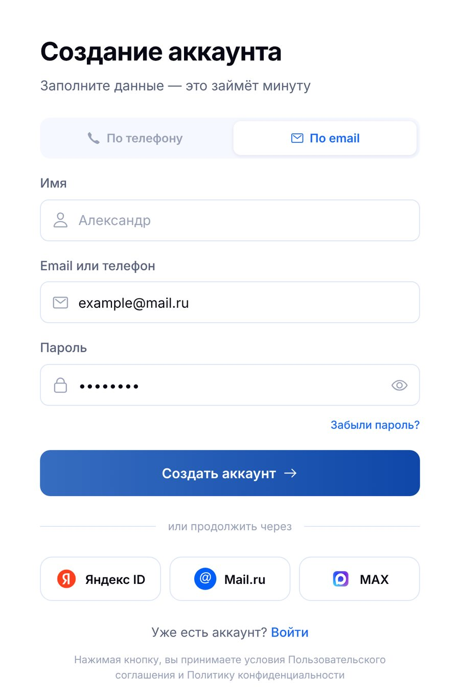
✓Аккаунт создан
0:13 · поля заполняются по очереди
050:11.5–0:16
Регистрация
Что в кадре
Кнопка вырастает в окно «Создание аккаунта» (как в кабинете). Вкладка «По email». Печатаются Имя «Александр», почта, пароль точками. Нажатие «Создать аккаунт» → спиннер → галочка «Аккаунт создан».
Движение
Камера ведёт за активным полем, подсвечено только оно. Подтверждение всплывает снизу с галочкой (приём Spotify).
Текст в кадре
Слева титр «Регистрация — за минуту». В окне тексты кабинета: «Заполните данные — это займёт минуту».
«Регистрация — за минуту.»≈ 1,6 с
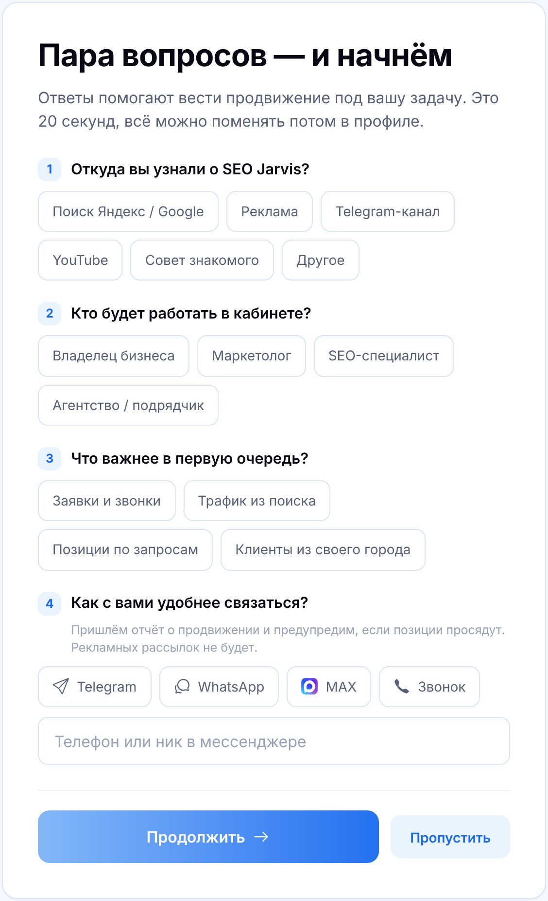
Пара вопросов
0:17 · камера едет вниз за курсором
060:16–0:20
Пара вопросов — и начнём
Что в кадре
Окно перетекает в опрос кабинета. Курсор быстро отмечает: «Поиск Яндекс / Google» → «Владелец бизнеса» → «Заявки и звонки» → «Telegram» → «Продолжить».
Движение
Камера плавно едет вниз за курсором, выбранный ответ подсвечивается синим. Четыре клика в ритм.
Текст в кадре
«Пара вопросов — и начнём» и вопросы опроса как в кабинете.
«Пара вопросов о вашей задаче…»≈ 2 с · фраза продолжается в следующей сцене
Адрес сайта
https://example.ru|
Регион продвижения
Москва и МО
Санкт-Петербург
Екатеринбург
Начать продвижение →
0:21 · экстремальный крупный план поля
070:20–0:27
Адрес сайта и регион
Что в кадре
Опрос сжимается в одно поле «Адрес сайта» на весь кадр, печатается https://example.ru. Камера отъезжает: это окно «Добавьте сайт для начала тестового периода». Курсор открывает «Регион продвижения», выбирает «Москва и МО», жмёт «Начать продвижение».
Движение
Наезд на одно поле (приём Claude и Anthropic), потом отъезд. Список регионов раскрывается пружиной, звук клавиш на каждую букву.
«…и одно поле: адрес вашего сайта. Плюс регион, где нужны клиенты.»≈ 4 с
Определяем тематику и нишу
✓ Собираем семантическое ядро
Считаем объём спроса…
Снимаем стартовые позиции
Находим конкурентов
1 240 запросов в работе
0:30 · кольцо 0 → 100%, шаги на барабане
080:27–0:37
Анализ сайта
Что в кадре
Кнопка «Начать продвижение» сжимается в точку, точка раскрывается в кольцо. Проценты 0 → 100%. Справа «барабан» шагов, как в кабинете: Определяем тематику и нишу → Собираем семантическое ядро → Считаем объём спроса → Снимаем стартовые позиции → Находим конкурентов. Под ним одометр «1 240 запросов в работе».
Движение
Кольцо из ролика Gemini, барабан из ролика Figma. Шаги ускоряются вместе с музыкой, у активного шага бегущий блик. Подъём к пику.
Текст в кадре
Названия шагов, «Jarvis работает», процент, «1 240 запросов в работе».
«Дальше Джарвис работает сам: определяет нишу, собирает семантическое ядро, считает спрос, находит конкурентов и снимает стартовые позиции.»≈ 8 с
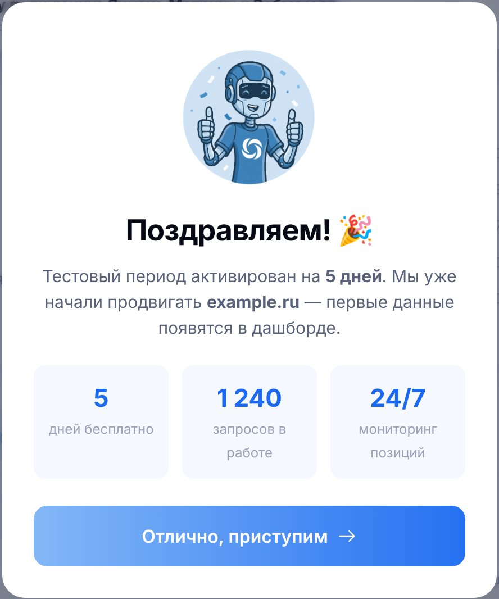
0:37 · пролёт сквозь кольцо
090:37–0:41ПИК РОЛИКА
Пролёт сквозь кольцо
Что в кадре
На 100% камера пролетает сквозь кольцо. За ним окно кабинета «Поздравляем!» с маскотом Jarvis: «5 дней бесплатно · 1 240 запросов в работе · 24/7 мониторинг позиций».
Движение
Дроп музыки, низкий удар. Это единственный пик: всё до него разгоняется к нему. Окно влетает из глубины и оседает на пружине.
Текст в кадре
«Поздравляем!» · «5 · 1 240 · 24/7»
«Продвижение запущено.»≈ 1,5 с, после удара
3. Тур по кабинету: что, зачем и как
0:41–1:41
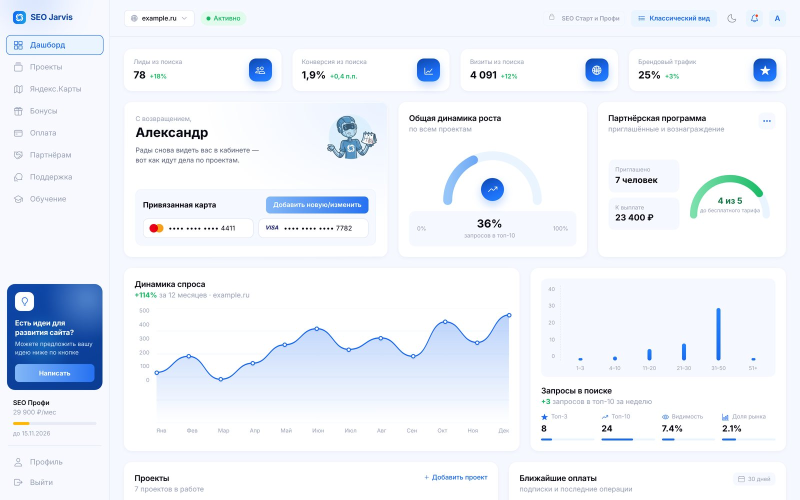
0:42 · кабинет оседает из 3D-наклона
100:41–0:48
Дашборд: всё на одном экране
Что в кадре
Окно «Поздравляем» уходит, под ним дашборд: «С возвращением, Александр», плашки Лиды из поиска 78 · Конверсия 1,9% · Визиты 4 091 · Брендовый трафик 25%, график «Динамика спроса», список проектов.
Движение
Кабинет оседает из 3D-наклона в ровный кадр. Цифры прокручиваются, как одометр, с шагом 0,2 с. График спроса прорисовывается слева направо.
Текст в кадре
Только интерфейс кабинета, без титров.
Зачем это клиенту
Главные цифры бизнеса в одном месте, без отчётов в PDF.
«Всё продвижение — как на ладони: визиты, заявки и рост на одном экране.»≈ 4 с
0:49 · меню разлетается по кругу
110:48–0:51
Что внутри: меню по кругу
Что в кадре
Камера отъезжает от дашборда, пункты бокового меню отрываются и раскладываются по кругу вокруг значка Jarvis. Курсор выбирает «Позиции», и камера влетает в этот пункт.
Движение
Радиальное меню из ролика Figma. Это переход в тур: дальше каждый раздел вылетает из своей точки на круге.
Текст в кадре
Названия разделов кабинета.
«Что внутри?»≈ 1 с
Позиции — каждый день
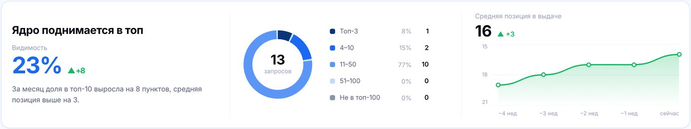
↑+4 позиции
0:54 · позиции катятся, по строкам идёт волна
120:51–0:58
Отчёт по позициям
Что в кадре
Блок «Ядро поднимается в топ»: видимость 23% ▲+8, кольцо 13 запросов, средняя позиция 16 ▲+3. Рядом таблица запросов: «стоматология москва» 3 (+4), «лечение кариеса» 15 (+4), «брекеты цена москва» 17 (+4).
Движение
Цифры позиций катятся вниз к лучшему месту, по строке проходит синяя волна-подсветка, всплывает «+4». Линия средней позиции дорисовывается.
Текст в кадре
Титр «Позиции — каждый день».
Зачем это клиенту
Не нужно звонить менеджеру и спрашивать «как там дела»: рост видно каждое утро.
«Позиции в Яндексе и Google обновляются каждый день. Видно, какой запрос вырос и на сколько.»≈ 5 с
Аудит от 0 до 100
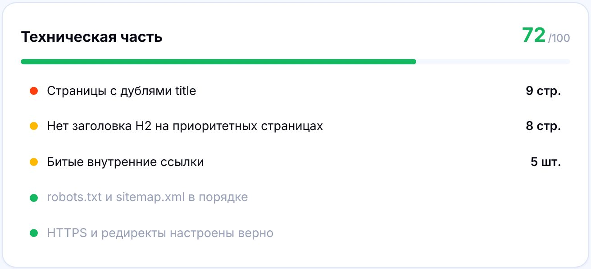
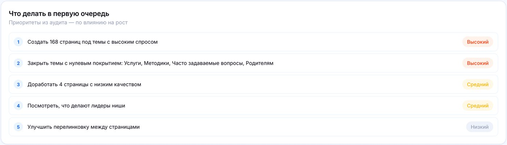
1:00 · кольцо 0 → 72, полосы заполняются
130:58–1:06
Технический аудит
Что в кадре
Кольцо оценки 72 из 100 «Выше среднего по нише», плашки «3 критичных · 7 предупреждений · 5 в порядке». Четыре полосы: Техническая часть 72, Контент 73, Ссылки 58, Скорость 83. Потом список «Что делать в первую очередь», первая строка «Создать 168 страниц под темы с высоким спросом · Высокий» подсвечена.
Движение
Кольцо набирает 0 → 72, полосы заполняются по очереди. Наезд камеры на первую задачу, она выезжает отдельной карточкой.
Текст в кадре
Титр «Аудит от 0 до 100».
Зачем это клиенту
Понятно, что чинить и в каком порядке, а не свалка предупреждений.
«Аудит — тоже сам: оценка от нуля до ста и список задач — что чинить в первую очередь.»≈ 5 с
Конкуренты на виду
Окон в топ-5
6
самые ценные — сюда переходов больше всего
1:08 · полосы долей растут, строка «вы» горит
141:06–1:13
Конкуренты и доля рынка
Что в кадре
Блок «Доля рынка»: competitor1.ru 31%, leader-site.ru 19%, best-niche.ru 12%, example.ru (вы) 7.4%, rival3.ru 5%. Затем карточка из раздела «Конкуренты»: «Окон в топ-5: 6» и «Главный соперник dentclinic.ru».
Движение
Полосы растут слева направо, строка «вы» подсвечивается жёлтым. Окно поворачивается из 3D, камера наезжает на «Окна в топ-5».
Текст в кадре
Титр «Конкуренты на виду».
Зачем это клиенту
Видно, кто забирает трафик и где у конкурентов слабые места.
«Конкуренты на виду: их доля рынка и места, где их можно обойти.»≈ 4 с
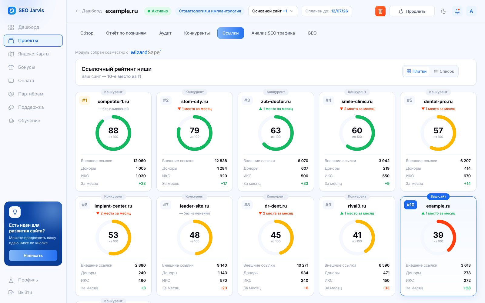
Ссылки против лидеров
1:14 · плитки переворачиваются по очереди
151:13–1:18
Ссылочный профиль
Что в кадре
«Ссылочный рейтинг ниши»: плитки конкурентов с кольцами-оценками (88, 79, 63…). Последней переворачивается плитка «Ваш сайт #10 · ▲ 1 место за месяц». Затем строка «Закупка ссылок · до 40 ссылок в месяц».
Движение
Плитки переворачиваются волной, кольца набирают значения. Камера останавливается на плитке «Ваш сайт».
Текст в кадре
Титр «Ссылки против лидеров».
Зачем это клиенту
Понятно, сколько ссылок не хватает до лидеров, и закупка уже входит в тариф.
«Ссылочный профиль против лидеров ниши. Закупка ссылок — уже в тарифе.»≈ 4 с
Сколько заявок даёт поиск
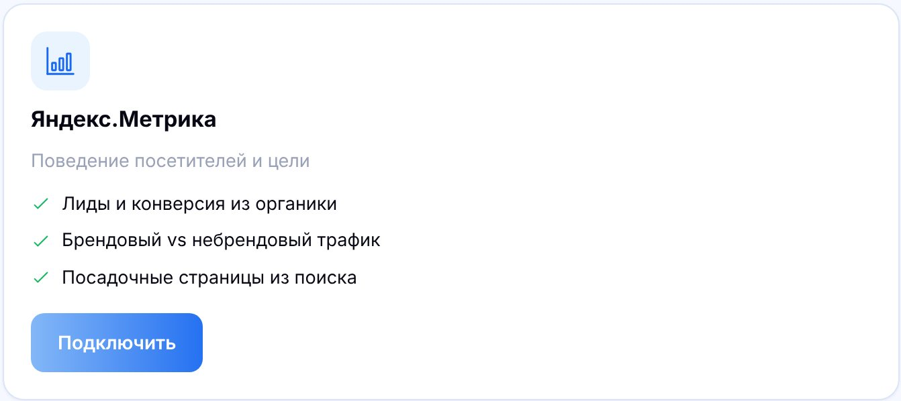
1:20 · цепочка цифр едет слева направо
161:18–1:26
Аналитика: Метрика и Вебмастер
Что в кадре
Курсор жмёт «Подключить» у Яндекс.Метрики и Яндекс.Вебмастера, две карточки сходятся в одну. Дальше «Потенциал трафика и лидов» цепочкой: частота 34 690 → без рекламы 24 283 → переходы 4 801 → лиды 144.
Движение
Две карточки съезжаются, линия связи прорисовывается между ними. Карточки цепочки въезжают по одной со стрелками, каждая цифра прокручивается одометром, последняя (144 лида) загорается зелёным.
Текст в кадре
Титр «Сколько заявок даёт поиск».
Зачем это клиенту
Видно не только трафик, а заявки и деньги из поиска, плюс сколько ещё можно получить.
«Метрика и Вебмастер — одним входом через Яндекс ID. Видно, сколько заявок приносит поиск и сколько может принести.»≈ 6,5 с
Вы в ответах нейросетей?
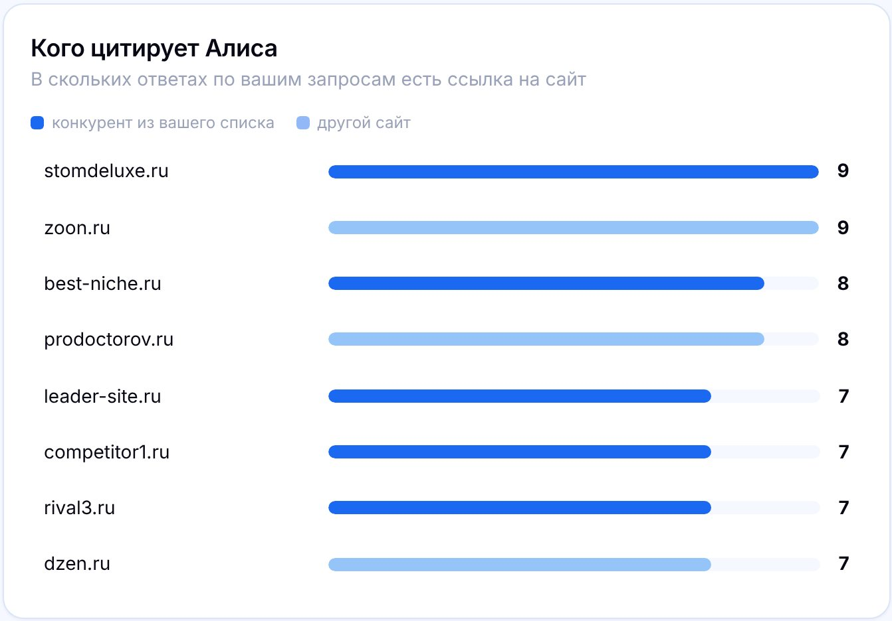
1:27 · счётчик 0 → 5 из 13
171:26–1:32
GEO: ответы нейросетей
Что в кадре
«Вы в ответах Алисы: 5 из 13», переключатели Алиса · ChatGPT · Perplexity · Gemini · GigaChat · DeepSeek (с пометкой «скоро»). Рядом «Кого цитирует Алиса» полосами.
Движение
Счётчик 0 → 5, полосы растут, курсор переключает вкладку «Алиса».
Текст в кадре
Титр «Вы в ответах нейросетей?»
Зачем это клиенту
Люди всё чаще спрашивают нейросеть, а не поиск. Видно, советует ли она ваш сайт.
«А ещё — видно, ссылается ли на ваш сайт Алиса в ответах нейросети.»≈ 3,5 с
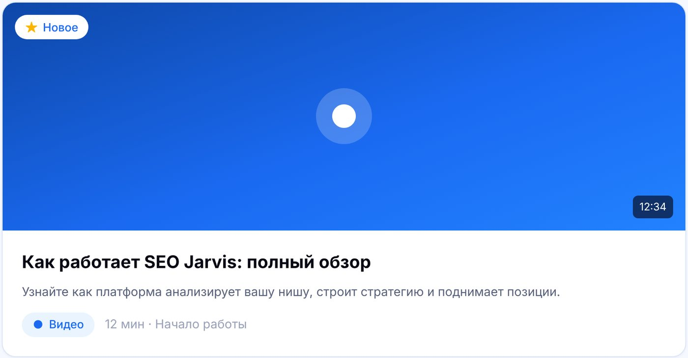
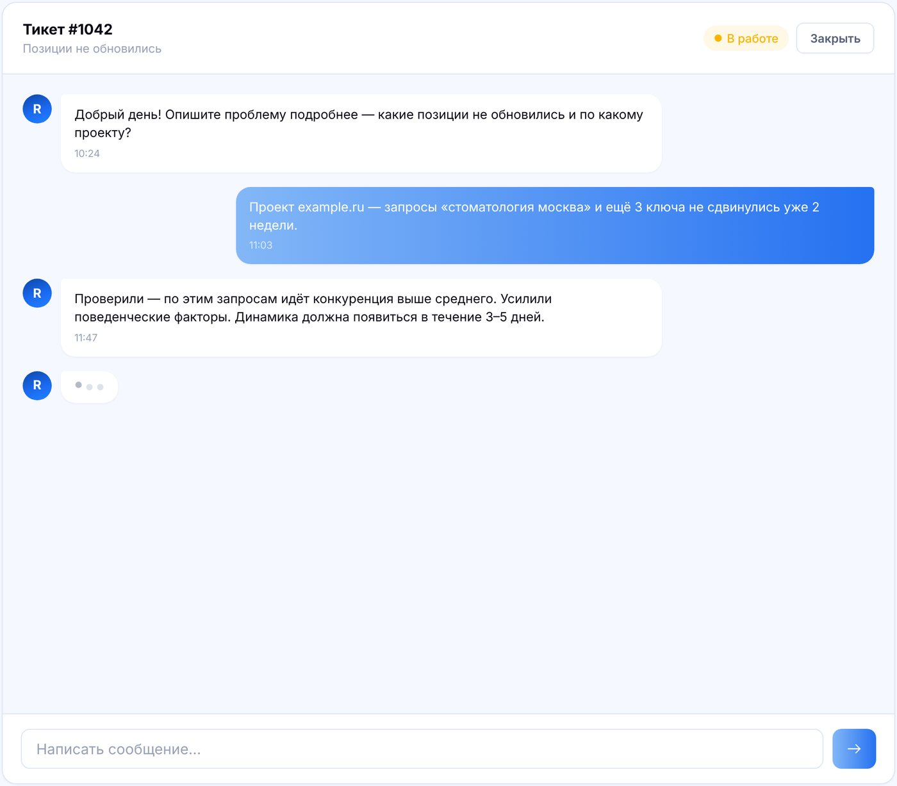
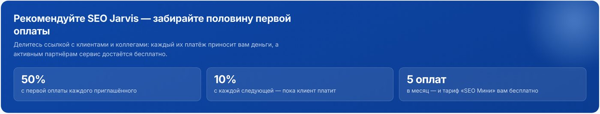
Обучение
1:33 · диагональная лента, подпись меняется
181:32–1:41
Ещё четыре раздела лентой
Что в кадре
Диагональная лента окон проезжает через кадр. По очереди в фокус выходят: 1) Яндекс.Карты: карточка организации с запросами; 2) Обучение: видеоурок «Как работает SEO Jarvis», прогресс уроков; 3) Поддержка: чат тикета, ответ поддержки; 4) Партнёрам: «50% с первой оплаты · 10% с каждой следующей».
Движение
Диагональная лента из ролика Spotify. Окно в фокусе резкое и крупнее, соседние размыты. Крупная подпись внизу меняется на каждое окно, примерно по 2 с.
Текст в кадре
«Карты» → «Обучение» → «Поддержка» → «Партнёрам»
Зачем это клиенту
Карты дают клиентов рядом, уроки объясняют цифры, поддержка отвечает в чате, партнёрка приносит деньги.
«Продвижение в Яндекс Картах, обучающий центр, поддержка в чате и партнёрская программа: пятьдесят процентов с первой оплаты.»≈ 7 с
4. Финал
1:41–1:53
Всё для роста — в одном кабинете
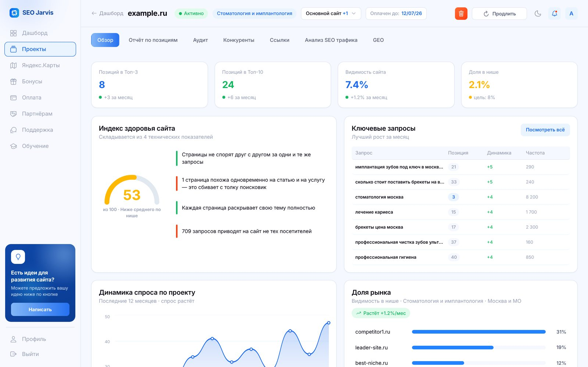
1:42 · лента собирается обратно в кабинет
191:41–1:46
Всё для роста — в одном кабинете
Что в кадре
Окна ленты слетаются обратно в один кабинет. Он встаёт в 3D-наклоне справа, слева крупная надпись.
Движение
Приём из второй версии. Надпись проявляется словами из размытия, кабинет медленно дрейфует.
Текст в кадре
«Всё для роста — в одном кабинете» (фраза с сайта).
«Всё для роста — в одном кабинете.»≈ 2 с
SEO на автопилоте
5 дней бесплатно
seojarvis.ru
1:47 · держится 3 с
201:46–1:53
Логотип и призыв
Что в кадре
Кабинет сжимается в знак Jarvis вместе с содержимым (приём первой версии). Рядом «SEO на автопилоте», под ним кнопка «5 дней бесплатно» и адрес seojarvis.ru. По кнопке проходит блик.
Движение
Финальная плашка держится 3 с, музыка затухает.
Текст в кадре
«SEO на автопилоте» · «5 дней бесплатно» · «seojarvis.ru»
«Джарвис. SEO на автопилоте. Пять дней — бесплатно, без карты.»≈ 4 с
Для ElevenLabs
Весь текст озвучки
Около 170 слов, спокойный темп. «Джарвис» написан по-русски, чтобы голос не прочитал имя по-английски. Голос и настройки — как в превью: Voice Design, Multilingual v2.
0:00Ждать отчёт от агентства целый месяц?
0:06Знакомьтесь: Джарвис. SEO-продвижение на автопилоте.
0:09Платформа вместо агентства.
0:12Регистрация — за минуту.
0:16Пара вопросов о вашей задаче…
0:20…и одно поле: адрес вашего сайта. Плюс регион, где нужны клиенты.
0:28Дальше Джарвис работает сам: определяет нишу, собирает семантическое ядро, считает спрос, находит конкурентов и снимает стартовые позиции.
0:38Продвижение запущено.
0:42Всё продвижение — как на ладони: визиты, заявки и рост на одном экране.
0:48Что внутри?
0:52Позиции в Яндексе и Google обновляются каждый день. Видно, какой запрос вырос и на сколько.
0:59Аудит — тоже сам: оценка от нуля до ста и список задач — что чинить в первую очередь.
1:07Конкуренты на виду: их доля рынка и места, где их можно обойти.
1:13Ссылочный профиль против лидеров ниши. Закупка ссылок — уже в тарифе.
1:19Метрика и Вебмастер — одним входом через Яндекс ID. Видно, сколько заявок приносит поиск и сколько может принести.
1:27А ещё — видно, ссылается ли на ваш сайт Алиса в ответах нейросети.
1:33Продвижение в Яндекс Картах, обучающий центр, поддержка в чате и партнёрская программа: пятьдесят процентов с первой оплаты.
1:41Всё для роста — в одном кабинете.
1:47Джарвис. SEO на автопилоте. Пять дней — бесплатно, без карты.
Перед стартом
Что нужно решить
Шрифт титров
Советую Unbounded. Можно выбрать любой из четырёх выше.
Музыка на 2 минуты
Трек из второй версии (HUEGO, Super Slowed) коммерческий: для рекламы нужна лицензия правообладателя, а полной версии в открытом доступе нет. Варианты: купить лицензию или взять похожий трек с лицензией для рекламы. Нужно ваше решение.
Что не вошло
Оплата и тарифы, поддомены и регионы, агентский режим, партнёрский API, бонусы от сервисов-партнёров. Каждый раздел можно добавить сценой на 4–5 с, ролик станет около 2 минут. Цены в кадр ставим только после сверки.
Данные в кадре
Всё из демо-кабинета: example.ru, стоматология, Москва. Цифры GEO в кабинете помечены как демо. Если нужен настоящий проект клиента, понадобится разрешение.